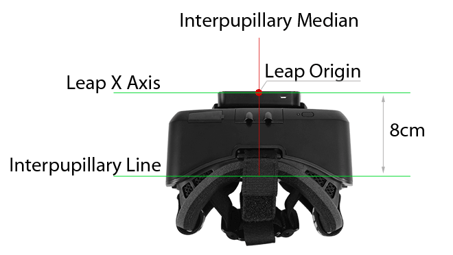
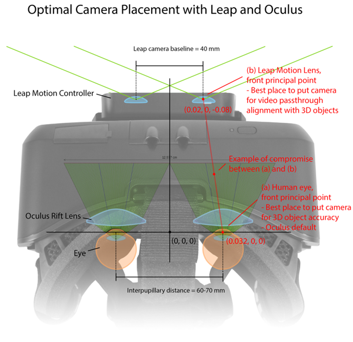
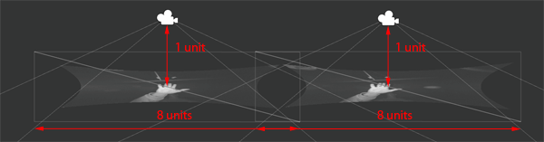

Setting Up Virtual and Augmented Reality Scenes¶
Setting up a 3D scene to display hands controlled by the Leap Motion device in the different available Virtual Reality (VR) APIs involves similar steps – though there are differences in how much an API or engine does for you. In general, these steps include:
- Mounting the Leap Motion device on the HMD.
- Calculating the transforms that describe the difference in position and orientation between mounting the Leap Motion device on the HMD and placing it on a table.
- Accessing the Leap Motion API to get tracking data.
- Calculating the transforms necessary to convert from the Leap Motion right-handed coordinate system to your target coordinate system (if the coordinate systems are different).
- Translating coordinates for positions, directions, and orientations from the Leap Motion coordinate system into the target world coordinate system.
- For Augmented Reality (AR), rendering the Leap Motion sensor images.
Mounting the Leap Motion Device¶

For the resourceful, there are no end of ways to attach the Leap Motion sensor to a head-mounted display: double-sided tape, velcro, rubber bands. For the rest of us, Leap Motion sells a custom mount – https://www.leapmotion.com/product/vr. The 3D printer files are also available (free) if you prefer to print your own. You can download the files from Thingivers and Grabcad. The Leap Motion mount was designed with the Oculus Rift DK1 and DK2 in mind, but since it uses double-sided tape, it could work with other HMD’s as well – as long as they have a flat, Leap-sized area in the front middle.
Note: We recommend that you mount the Leap Motion device with the green power indicator LED facing downward. While the Leap Motion software will flip the coordinate system and images if mounted indicator upwards, it can only do so after a hand enters the view. In the meantime (or if auto-orientation is turned off in the Control Panel), the images from the cameras can appear upside down.
When you mount the device on an HMD, measure the offsets between the Leap Motion origin and the midpoint of the line running from pupil to pupil in all dimensions (this line is refered to as the interpupillary line). These measurements will be required to correctly place 3D hands in the scene. The device should be mounted square to the device so that the cameras are facing straight ahead and level to the horizon when you are looking straight ahead and level.
The matrix that represents the offset of the Leap Motion device from the user’s interpupillary and medial lines looks like the following, where \(t_{x}\), \(t_{y}\), and \(t_{z}\) are your measured offsets:
Typical values for the translation components on an Oculus Rift are \(t_{x} = 0\), \(t_{y} = 0\), and \(t_{z} = -80\). When mounting your device, strive to keep \(t_{x}\), \(t_{y}\) as close to zero as possible.
‘ If your Leap Motion device is mounted square to the HMD with the y-axis projecting forward, you can specify the rotation of the device from upward-facing desktop mode to the forward-facing HMD mode with this matrix, which represents a -90 degree rotation around the x-axis and a 180 degree rotation around the z-axis:
Combine the two matrices into one transform by multiplication:
Using a Proxy Object¶
An alternate method of achieving this goal is to place a proxy object representing the Leap Motion device at the same relative position and orientation to the virtual world cameras as the device has to your eyes in the real world. This method is easier to use in graphic development environments like Unity and Unreal. The VR assets in the Leap Motion Unity asset package take this approach.
A proxy object for the Leap Motion device placed in relationship to the left- and right-eye cameras.
You can then transform the Leap Motion coordinates using the model matrix of the proxy object.
[Code for this]
– Unity, probably similar for Unreal
object.transform.TransformPoint()
object.transform.TransformDirection()
– C++, etc
//modelMatrix is a Leap::Matrix object containing the model matrix of your proxy object
Leap::Vector worldPosition = modelMatrix.transformPosition(position);
Leap::Vector worldDirection = modelMatrix.transformDirection(direction);
Note that this doesn’t account for coordinate system and unit conversions, which we will discuss later.
Angling the Mount¶
If you angle your mount relative to the HMD, you must measure the angles and apply the same rotations to the tracking data. Angling the Leap Motion device downward can provide a more comfortable working space, but this also causes visual disorientation when using the video passthrough from the device cameras. Thus, an angled mount could restrict the types of applications you can develop or use.
You can represent mount rotations as the following matrices, where \(\alpha\), \(\beta\), \(\gamma\) are your angles measured counterclockwise (right-hand rule) around the x, y, and z axes:
Combine the rotations by multiplying these matrices:
Finally, you can combine the translations for the mount offset and rotations for the mount angles into one transform by multiplying the matrices:
Converting Coordinate Systems¶
The Leap Motion coordinate system uses a right-handed convention and units of millimeters. Positive y is up; z is front-to-back; x is right-to-left. Your world might use a different set of conventions and units. For example, Unity3D uses a left-handed convention and units of meters, but also oriented with positive y facing up. Unreal Engine uses a left-handed convention and units of centimeters, and with positive z facing up. Three.js, a popular WebGL library uses the same conventions as the Leap Motion, but has no intrinsic convention for units.
Note: the scripts in the Unity asset package and the Unreal Engine plugin transform the coordinate systems automatically.
Scaling from Leap Motion coordinates to a unit system in meters can be achieved with the following matrix (change the scale factor from .001 to the correct value to scale to different linear units):
Note that the scale factors used assume that your game is using a 1:1 scale with reality. This is the default for Unity3D and Unreal Engine, for example, the standard Unity character controller prefabs are human scale (between 1 and 2 meters tall). Matching the scale accurately is important in a VR scene since the user has a much better sense of where their virtual hands should be in comparison to their real hands. In an AR scene, this can be even more critical.
Changing the basis of the coordinate system can also be accomplished with a matrix transform. For example, the following matrix changes Leap coordinates and directions to the Unity left-handed convention (by scaling the z-axis by -1):
Head Motion¶
In addition to the physical offset of the device from the user’s eyes, you must compensate for the motion of the user’s head while the scene is playing. Otherwise, the hands will appear to move when the head moves. Head tracking information can be accessed from the Head tracking APIs of your HMD or VR SDK. You want to anchor the Leap tracking data to the midpoint of the interpupillary line – the line between the two cameras in the virtual world. Typically, the head tracking information will be in the form of another transform matrix. For example, in the Oculus API, you can get the head tracking data relative to this point using :code:`GetTrackingState().HeadPose <https://developer.oculus.com/doc/0.5.0.1-libovr/structovr_tracking_state.html>`_.
If you are using a proxy object which is parented to a scene object that is already driven by the HMD head tracking, then this step has already been done.
Accessing Tracking Data¶
Accessing the basic tracking data from the Leap Motion service is no different in a VR app than any other. See Setting Up a Project for information about adding the required Leap Motion libraries to a project and Hello World for examples of basic access to the tracking data.
Do note that when the Leap Motion sensor is mounted on an HMD, you should set the “Optimize for HMD” policy. This policy essentially instructs the Leap Motion software to expect hands to enter the field of view with their backs toward the cameras rather than their palms.
[Policy flag setting code examples] .. only:: cpp .. only:: csharp or unity .. only:: java
Transforming Tracking Data¶
Finally, once the Leap Motion hardware is mounted and measured, the scene is setup and basic design decisions made, you can transform the Leap Tracking data into the scene so hands (or interaction if not actually showing hands) appear in the correct place. Essentially, you take all the matrices defined above that are relevant to your graphics system, multiply them together and use the result to transform the Leap Motion tracking data. Obviously, you want to precompute as much of this transformation as possible since most of the matrices do not change from frame to frame.
For example, if your Leap device is mounted on an Oculus Rift DK2 without any odd angles and your world model uses a left-handed coordinate convention and units of meters, then you can take \(M_{tabletop{\mapsto}mounted}\) as defined above, with \(t_x = t_y = 0\) and \(t_z = -80\) and multiply it by the coordinate unit (mm to m) and basis change (right-handed to left-handed) matrices, and fimally by the HMD transform:
Transform a Position¶
To transform a position in Leap Motion coordinates to world coordinates you essentially multiply the coordinate vector by the \(M_{Leap{\mapsto}World}\) matrix. Using the Leap Motion math functions, you can do this with the Matrix class transformPoint() function:
//m_LeapToWorld is the Leap to World transformation
Leap.Vector worldPosition = m_LeapToWorld.transformPoint(leapPosition);
Transform a Direction¶
Transforming a direction vector is very similar to transforming a position, except that you do not want to apply the coordinate scaling used to change the linear unit of measurement.
Note: If you are converting units, you must create a different transform that does not include the unit scaling matrix:
- begin{equation}
- M_{Leap{mapsto}World} = M_{HMD{mapsto}World}
- times S_{axis conversion} times M_{tabletop{mapsto}mounted}
end{equation}
The Leap Motion Matrix class defines the transformDirection() function, which does this:
//m_LeapToWorld is the Leap to World transformation
Leap.Vector worldDirection = m_LeapToWorld.transformDirection(leapDirection);
Camera Placement in an AR scene¶
For a VR scene (without camera images), proper placement of the cameras is straightforward: each camera should be at the user’s corresponding eyepoint.
For an AR scene (using camera images), proper placement is a judgement call. Images from the Leap Motion cameras are 2D representations taken from a particular point of view and, unlike 3D data, you cannot simply apply a transformation to change the view to a different vantage point. In order to make the camera images match the 3D tracking data, you must move the cameras forward by the same amount that the physical Leap device is forward of the user’s eyes (i.e. 8cm for the Oculus) and move them closer together – the Leap cameras are 40mm apart, while the typical distance between human pupils is 64mm. However, moving the cameras closer together changes the stereo disparity and will make objects appear to be larger then they are in real life.
You can put the scene cameras at the user’s pupils to maximize 3D accuracy or you can move them forward and closer to maximize alignment between the images and the 3D objects. You can also compromise and place the cameras between these two extremes. It really depends on which aspect is more important to your content.
A quick and dirty trick to matching 3D hands and other objects without changing the position of scene cameras, is to scale the objects by the ratio of the user’s interpupillary distance (IPD), which averages 64mm, and the Leap Motion camera offset (40mm). If available from your HMD API, you should use the actual IPD rather than an estimated average. This technique can be used when your code does not control the position of the cameras (such as when using the Oculus rig in Unity).
Using the Image API in VR or AR¶
You can display the images from the Leap Motion cameras using rectangles texured with the image bitmaps. When you render the images, do not apply the same world transformation to these quad objects as you apply to other 3D objects. The image location and orientation must remain locked with respect to the scene cameras regardless of how your head is tilted. This means skipping the modelview matrix transform (by setting the modelview to the identity matrix) and using the projection transform only. It is sufficient to define the quad using the coordinates (-4, -4, -1), (4, -4, -1), (-4, 4, -1), and (4, 4, -1). Then, texture it with the fragment shader provided given in Correction using Shaders.
In Unity and other graphic development environments, you can parent the image quads as children of the left and right camera objects. Our Unity image passthrough example does this for you.
Each scene camera has an associated quad, textured with the image from the corresponding Leap Motion camera. The width and height of the quad must be 8 times the distance between the quad and the camera. By placing the quads close enough to the cameras (while maintaining the 8:1 side-length to distance ratio), you can prevent one image from overlapping into the field of view of the other camera.